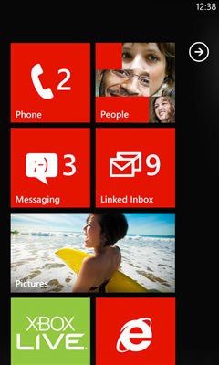
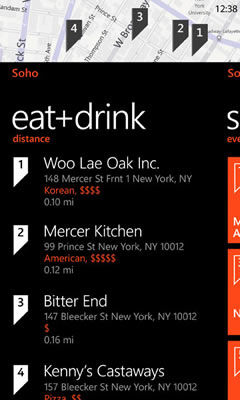

Your App Title Here
The One-Page
Windows Phone 7 App
Website Template
Latest
Follow WP7appSite- 
- 
Features
- Responsive, mobile-friendly layout
- Fully configurable branding [Example Site]
- Twitter feed and follow button
- Smooth jQuery Screenshot slider
- Just add your own content!
- Download Here [225Kb .ZIP]
The best (and only) Windows Phone 7 App site template I've ever used!
Nick Harewood, App Designer